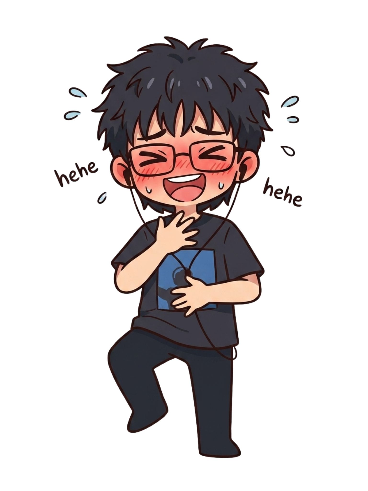
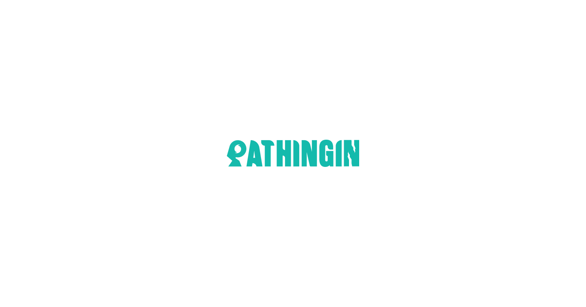
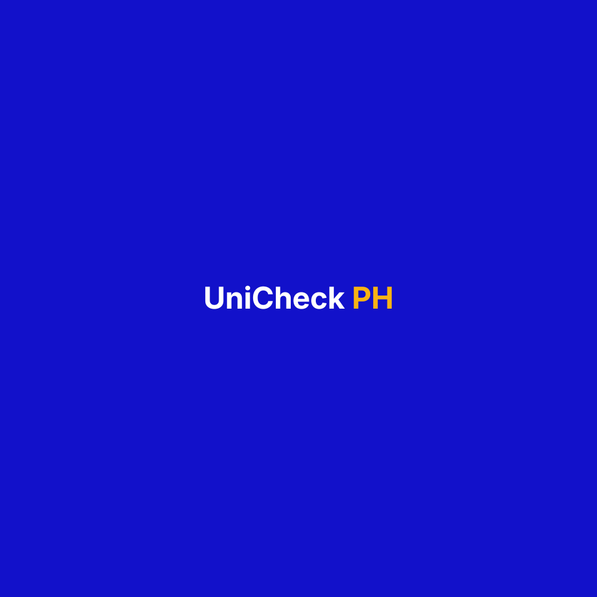

HackFest GDG Loyola · Mar 2026
VerifAI
An AI Google Docs extension that cuts research verification time by 40% via a 100-point credibility score. Led system analysis end-to-end.
Google Docs Add-on · AI · System Analysis
+4
Projects led
3.95
GPA · Dean's Lister
I'm Kyle Anthony Magalona, an Information Systems student leading AI-driven, data-centric projects across full-stack development, system analysis, and UI/UX.

01 — About
I'm an Information Systems student at De La Salle - College of Saint Benilde, with a working background in full-stack development, systems analysis, and UI/UX design. I lead small teams that ship AI-driven, data-centric tools.
My work tends to sit at the intersection of clean interfaces and the system models behind them — SRS, DFDs, use cases, and the database design that makes them real. I care about clarity, fairness, and tools that hold up under real use.
Focus
Systems · UI/UX
Based in
Manila, PH
02 — Skills
The technical and interpersonal toolkit I bring to a team — picked up across coursework, hackathons, and project leads.
Languages
C# · Python · JavaScript
HTML · CSS
Frameworks
React · Django
Tailwindcss
AI Tools
Google Stitch · Claude
Nanobanana
Database
SQL
Tools
Git · GitHub
Design Tools
Figma · Canva
Interpersonal
Interests
03 — Projects
Hackathons, competitions, and academic systems I've helped lead, analyze, or build end-to-end.
HackFest GDG Loyola · Mar 2026
An AI Google Docs extension that cuts research verification time by 40% via a 100-point credibility score. Led system analysis end-to-end.
Google Docs Add-on · AI · System Analysis

UPLB Warframes · Feb 2026
UI/UX for an AI-driven real-time disaster navigation prototype. Ranked 10th of 20; designed transitions that simplified multi-agency data.
Figma · UI/UX · Prototype

DLS-CSB · Sept – Dec 2025
An AI-powered academic integrity platform — centralized plagiarism and AI detection with real-time dashboards. Authored the SRS, DFDs, use cases, and RTM as project lead.
Systems Analysis · SRS · DFD · RTM
DLS-CSB · May – Aug 2025
A web-based smart scheduling system with real-time updates, CSV/Excel parsing, and automated shift generation. Built conflict validation and rotation logic to eliminate overlaps.
C# · ASP.NET · SQL
04 — Services
Where my coursework, project leads, and competition work tend to add the most value to a team.
Web platforms and internal tools across C#, Python/Django, and React — from data layer to interface.
↗SRS authoring, data flow diagrams, use cases, and requirement traceability — the documentation that makes a system buildable.
↗Figma-based interface design, prototyping, and transition work — focused on simplifying dense or multi-agency data.
↗Schema modelling and SQL for academic and operational systems — built to be queryable, normalized, and easy to extend.
↗05 — Experience
March 2026 · Quezon City
Led system analysis for VerifAI, an AI Google Docs extension cutting research verification time by 40% through a 100-point credibility score.
Feb 16 – 23, 2026 · Laguna · Remote
Ranked 10th of 20; designed UI/UX for Pathingin, an AI-driven real-time disaster navigation prototype. Built intuitive interfaces and transition animations that simplified complex multi-agency data.
Sept – Dec 2025 · DLS-CSB
Led an AI-powered academic integrity platform; authored the SRS and system models (DFD, use cases, RTM). Designed a centralized plagiarism and AI detection system with real-time dashboards and reporting.
May – Aug 2025 · DLS-CSB
Built a web-based smart scheduling system with real-time updates, CSV/Excel parsing, and automated shift generation. Implemented conflict validation and shift rotation logic, improving fairness and eliminating overlaps.
2024 – 2028 · Taft, Manila
President's / Dean's Lister, 1st Year (GPA: 3.95). Coursework: UIUXDES, Web Development, Systems Analysis, Database Design.
July 2022 – April 2024 · Intramuros, Manila
Information and Communications Technology. Graduated With Honors (GPA: 94.3).
06 — Contact